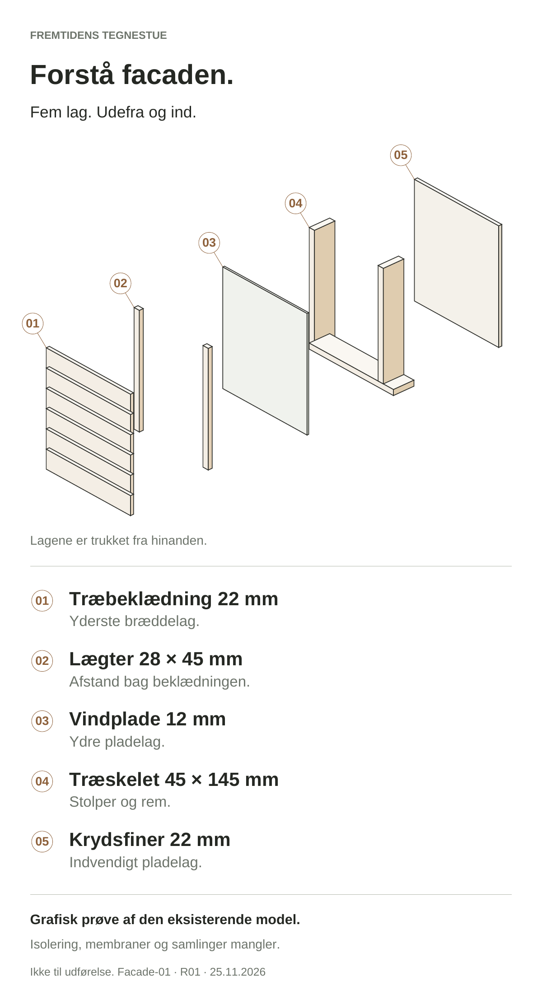

En tegnet forklaring
Forstå facadens lag
Se fem modellerede lag hver for sig og samlet i snit. De samme numre følger delene, så du kan forbinde tegningen med forklaringen.
Grafisk prøve af et gemt modeludsnit. Isolering, membraner, inddækninger og fastgørelsesdetaljer mangler. Prøven er ikke til udførelse eller dokumentation for en færdig væg.

Læs lagene udefra og ind
- Træbeklædning, 22 mm. Det yderste bræddelag.
- Lægter, 28 × 45 mm. Afstand bag beklædningen. Åbninger og luftveje er ikke eftervist i prøven.
- Vindplade, 12 mm. Det ydre pladelag.
- Træskelet, 45 × 145 mm. Modellerede stolper og rem; ikke en ny bæreevneberegning.
- Krydsfiner, 22 mm. Det indvendige pladelag.
De fem viste lag giver en modeldybde på 229 mm ved en stolpe. Det er ikke en komplet ydervægs tykkelse eller dokumentation for isoleringsevne.
Se sammenhængen på papir
A3-arket viser også lagene samlet i et vandret snit i målestok 1:2. Udskriv i 100 % og kontrollér størrelsen. Den digitale eksport er gennemgået; fysisk papirprøve og uafhængig brugeraccept er stadig åbne.
Åbn A3-tegningen (PDF) · Hent den redigerbare A3-tegning (SVG) · Hent mobiltegningen (SVG)


Hvad kan et andet materialevalg ændre?
Et skift i beklædning kan også ændre underlag, fastgørelser, montage, vedligehold og adgang til reparation. Tegningen hjælper med at stille de spørgsmål. Den beregner ikke selv pris eller klima, og den følger ikke en åben SolidCraft-model.
At forbinde de samme dele med model, mængder og beregninger er et udviklingsspor. Det er ikke en funktion på denne læseside.